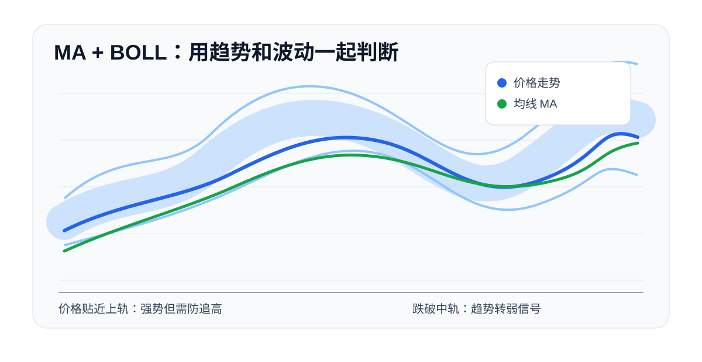

MA，也就是移动平均线，是新手最容易上手的趋势指标。它把一段时间内的价格做平均处理，过滤掉一部分短期波动，让交易者更容易看清当前市场处于上涨、下跌还是震荡。
01
MA 解决什么问题
K 线本身波动很快，单看一两根 K 线容易被短线情绪影响。MA 的作用是把价格走势平滑化，帮助我们判断大方向。
常见周期包括 MA5、MA10、MA20、MA60。周期越短，对价格反应越灵敏；周期越长，越能代表中长期趋势。
02
主要看法
- 价格长期站在 MA20 或 MA60 上方，市场偏强。
- 价格长期压在 MA20 或 MA60 下方，市场偏弱。
- 短期均线上穿长期均线，说明短线动能改善。
- 短期均线下穿长期均线，说明短线动能转弱。
- 多条均线向上发散，趋势通常更清晰。
- 多条均线缠绕，说明市场大概率还在震荡。
03
实战使用
如果价格回踩 MA20 后重新放量上涨，说明均线附近可能形成支撑。反过来，如果价格反弹到 MA20 附近就被压回，说明均线可能变成压力。
更稳妥的做法是把 MA 和成交量结合起来看。突破均线时有量能配合，信号更可靠；没有成交量配合，容易是假突破。
04
不同周期怎么选
短线交易者常看 MA5、MA10，因为它们对价格变化反应快，适合观察短期情绪。但反应快也意味着噪音更多，价格稍微波动就可能穿越均线。
中线交易者更常参考 MA20、MA30。它们可以近似理解为一段时间内的市场平均成本，适合判断价格是处在强势区还是弱势区。
长线或大级别趋势判断可以参考 MA60、MA120。价格长期在这些均线上方，说明市场结构更健康；如果反弹始终无法站回长期均线，说明上方套牢盘或抛压仍然明显。
05
三种典型形态
第一种是多头排列。短周期均线在上，长周期均线在下，多条均线向上发散。这通常说明趋势比较顺畅，回调时可以重点观察支撑是否有效。
第二种是空头排列。短周期均线在下，长周期均线在上，多条均线向下发散。这说明市场偏弱，反弹更容易遇到压力。
第三种是均线缠绕。多条均线互相交叉，价格在均线附近来回震荡。这种情况最容易出现假信号，新手不适合频繁交易。
06
案例化判断
假设某个币种从低位反弹后站上 MA20，随后 MA5 上穿 MA10，成交量也比前几天明显放大。这说明短线情绪改善，但还不能直接判断大牛市开始。更合理的做法是继续观察价格能不能站稳 MA20，以及 MA20 本身是否开始向上拐头。
如果价格突破后很快跌回 MA20 下方，而且成交量在下跌时放大，说明突破失败概率上升。这时 MA20 反而可能从支撑变成压力。
07
和其他指标搭配
MA 适合判断方向，成交量适合验证力度，MACD 适合观察动能。比较完整的判断可以是：价格站上 MA20，MA20 开始向上，MACD 柱状图转正，突破时成交量放大。这样的组合比单看均线金叉更有参考价值。

08
新手误区
不要看到金叉就立刻买，看到死叉就立刻卖。横盘行情里，均线会频繁交叉，容易连续给出错误信号。MA 更适合趋势行情，在震荡行情里要降低它的权重。
另一个误区是频繁切换周期。看 5 分钟图想买，看 1 小时图又想卖，看日线图又觉得趋势还在，最后会越来越混乱。新手最好先确定自己做的是短线、中线还是波段，再固定主要观察周期。
09
参考来源
- OKX：零基础学K线 | 19 常用分析指标 1：MA
https://www.okx.com/zh-hans/learn/zero-based-currency-market-analysis-19-common-analysis-index-ma-cn